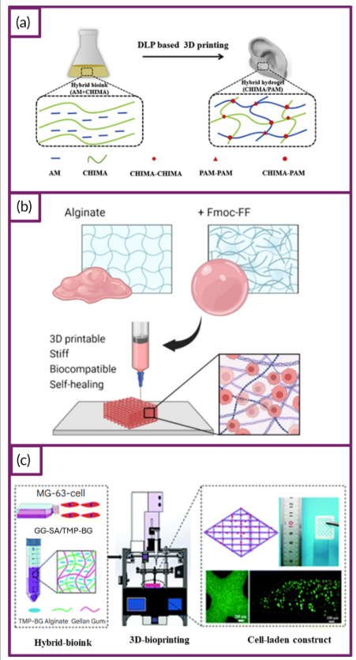
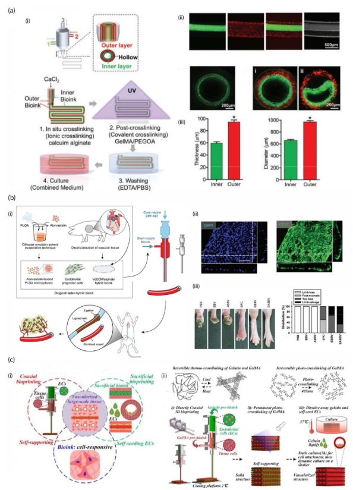
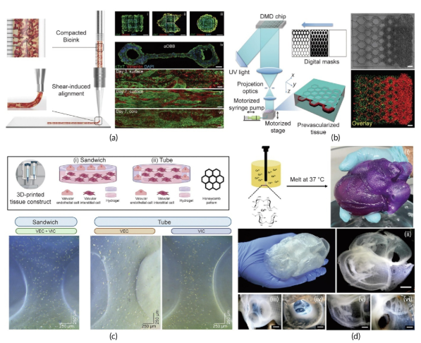

In recent years, bioprinting has rapidly advanced regenerative medicine by combining the precision of 3D printing with the complexity of biological materials. This technology enables the creation of living structures that closely replicate natural tissues, offering new solutions to organ shortages through patient-specific design, bio-inks, and cell engineering.
Beyond rebuilding vascular and neural networks, bioprinting holds the promise of fabricating functional organs such as the heart and liver—once unimaginable in regenerative medicine. Despite ongoing challenges in material stability, printing accuracy, and cell viability, its fast-paced innovation is transforming tissue engineering and regenerative therapy.

Figure 1. Schematic overview of different hybrid bioink formulations and their roles in enhancing biocompatibility, mechanical strength, and printability in 3D bioprinting.(a) Hybrid photo-crosslinkable bioink derived from chitosan (CHIMA) and acrylamide enables the fabrication of biocompatible, mechanically robust hydrogels via DLP. (b) Bioink combining Fmoc-diphenylalanine (Fmoc-FF) self-assembling peptides with sodium alginate offers biocompatibility, toughness, printability, and self-healing properties. (c) Hybrid bioink composed of gellan gum, sodium alginate, and thixotropic magnesium phosphate-based gel (GG–SA/TMP–BG) provides excellent printability, biocompatibility, mechanical durability, and bioactivity for regenerative medicine applications.
1. From Cells to Organs: The Logic of Bioprinting
In bioprinting, bioink plays a pivotal role—not only as the matrix supporting cell growth but also as the key determinant of tissue performance. Bioinks generally fall into two categories:
Natural polymers (e.g., collagen, gelatin, chitosan, hyaluronic acid) offer excellent biocompatibility and support cell proliferation.
Synthetic polymers (e.g., PEG, PCL, PLA) provide higher mechanical strength and stability but often require modification to enhance cell adhesion.
Material selection directly influences the mechanical properties, structural integrity, and cell viability of printed tissues. For instance, collagen and gelatin are suitable for soft tissue construction, while PCL and PLA are preferred for load-bearing tissues such as bone or cartilage.
Cell sources are equally critical—researchers use stem cells, primary cells, or genetically engineered cells to achieve functional and personalized tissue constructs.Bioink + Living Cells + 3D Precision Printing = A Customizable, Living Construct—the fundamental logic behind the future of artificial organ fabrication.
2. Neural Bioprinting: Hope for Nerve Regeneration
Nerve injury remains one of the greatest challenges in regenerative medicine. Traditional surgery offers only limited repair, while 3D bioprinting provides a novel path toward functional nerve regeneration.
By embedding neural stem cells and growth factors (e.g., VEGF) in hydrogels, researchers achieve controlled factor release and directional cell migration. For instance, neural stem cells printed around VEGF-loaded fibrin gels grow toward the gel, forming guided neural pathways.
Recent advances include the 3D printing of multi-channel nerve grafts co-loaded with mesenchymal stem cells and Schwann cells, resulting in implantable, structurally complete nerve substitutes. In animal studies, these “printed nerves” have successfully guided axonal regrowth, showing great promise for spinal cord repair.

Figure 2. Overview of 3D bioprinting strategies for vascularized and multilayer tubular tissues. (a) Bioprinting of multilayer tubular tissues: Coaxial bioprinting enables the fabrication of hollow, multilayered tubular structures with distinct layer separation and precise dimensional control, demonstrating preserved structural integrity. (b) Cell/drug-loaded biomimetic vessels: Bioprinted vessels carrying cells or drugs promote vascularization by inducing endothelial progenitor cell alignment, showing therapeutic potential in ischemic limb models. (c) Development of vascularized constructs: Coaxial and sacrificial bioprinting approaches allow the creation of self-supporting, vascularized structures with mechanical stability and functional perfusion ensured by crosslinking mechanisms. 3D, three-dimensional; EC, endothelial cell; EDTA, ethylenediaminetetraacetic acid; GelMA, gelatin methacryloyl.
3. Vascular Bioprinting: Bringing Tissues to Life
Regardless of the type of tissue being printed, vascularization remains the key determinant of success. Without blood vessels, cells cannot obtain sufficient oxygen and nutrients, making long-term tissue survival impossible.
Early studies relied on scaffold materials such as agarose and alginate to build vascular structures. However, these materials were limited by poor mechanical strength and low permeability. Today, advances such as coaxial cell printing and sacrificial template printing have enabled the fabrication of dual-layered vascular structures—consisting of both endothelial and smooth muscle layers—within a single printing process. Researchers can now even construct microscale perfusable channels, creating fully functional vascular networks.
For instance, the Gao group developed a composite bioink composed of vascular tissue-derived extracellular matrix (dECM), alginate, and drug-loaded microspheres. When applied in animal models, this formulation successfully promoted neovascularization, offering a new strategy for treating ischemic tissues. In the future, such vascularized printed tissues hold great promise not only for organ fabrication but also for disease modeling and drug screening applications.
4. Cardiac Bioprinting: Building “Beating Tissues”
Cardiovascular disease is a leading global killer, and cardiomyocytes have minimal regenerative capacity. 3D bioprinting offers a path to reconstruct myocardial tissue, heart valves, and even whole hearts.
Cardiac Bioprinting Process typically involves three main stages:
Pre-processing Stage: Patient-specific 3D cardiac models are created based on CT or MRI imaging data.
Printing Stage: Biological materials and cells are deposited layer by layer according to the model to construct myocardial and vascular structures.
Post-processing Stage: The printed constructs are cultured in a bioreactor, allowing gradual maturation and the acquisition of contractile functionality.

Figure 3. Advances in 3D cardiac bioprinting and tissue engineering. (a) Bioprinted anisotropic organ building blocks (aOBBs) form engineered cardiac tissues with programmable alignment, showing preferential cell orientation after 7 days. (b) Microscale continuous optical bioprinting creates complex pre-vascularized structures supporting organized microvascular networks. (c) Co-cultured valvular interstitial and endothelial cells form functional multicellular structures, demonstrating successful valve tissue engineering. (d) FRESH bioprinting produces full-scale human heart models with anatomically precise internal features, highlighting the feasibility of large-scale cardiac tissue fabrication.
5. Conclusion
From nerves to vessels, from skin to heart, bioprinting is reshaping our understanding of “manufacturing life.” It offers new hope for organ transplantation and shows great potential in disease modeling, drug screening, and personalized therapy. In the future, when printer nozzles deposit living cells instead of plastic or metal, humanity may truly be able to “print life.”